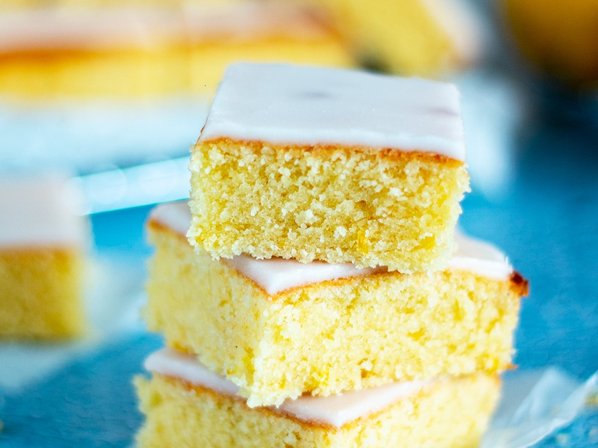
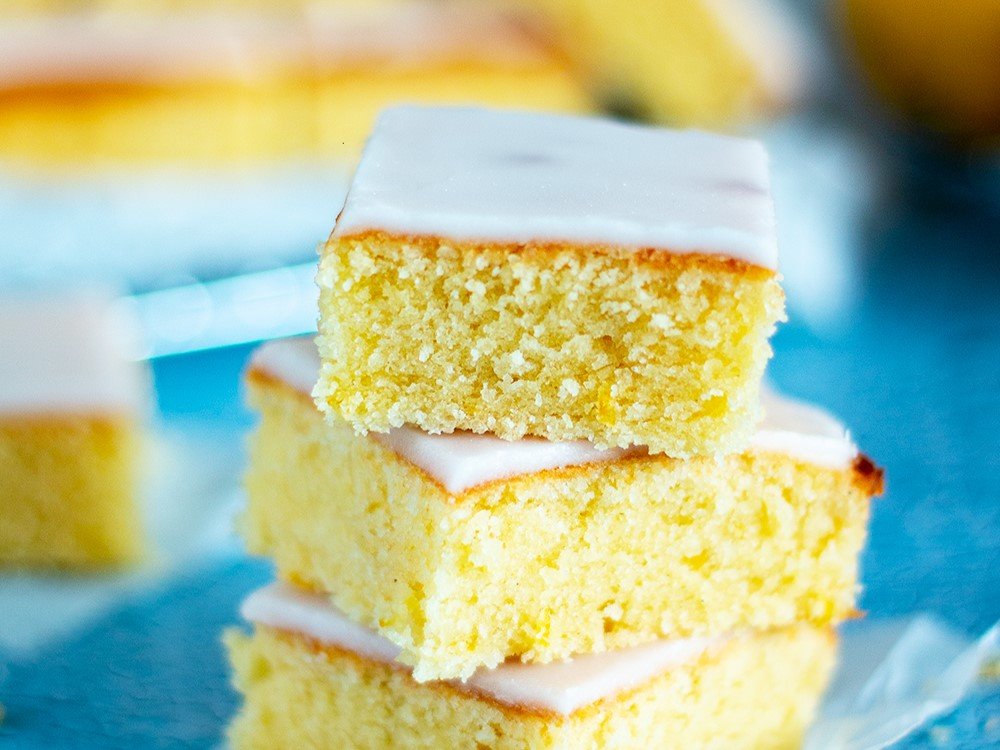
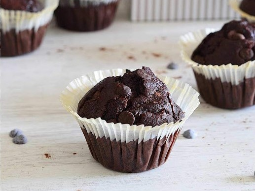
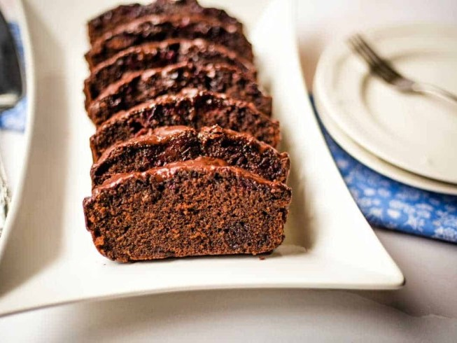

Brownies de Limón
Publicado el
Receta refrescante e ideal para los amantes del límon y quienes buscan el balance perfecto entre lo dulce y lo ácido. Preparala en pocos minutos para compartir con tus amigos! 🍋🍋✨
Leer másPublicado el
Receta refrescante e ideal para los amantes del límon y quienes buscan el balance perfecto entre lo dulce y lo ácido. Preparala en pocos minutos para compartir con tus amigos! 🍋🍋✨
Leer másPublicado el
Si sos fan del chocolate, no te podes perder esta receta! Esponjosos y perfectos para cualquier ocasión. Lo mejor: podés decorarlos como quieras!🍫❤️
Leer másPublicado el

Hotckes clásicos y esponjosos para endulzar tu día. Es una alternativa genial para gustos variados, se pueden acompañar con lo que más te guste! 💛🥞
Leer másPublicado el

Suaves y delicadas estás galletitas son perfectas para acompañar el té! Lo mejor es que son simples y rápidas de preparar. ✨💛
Leer másPublicado el
Natural e irresistible, este budín es una buena opción para aprovechar las bananas maduras y convertirlas en un postre casero, rico y fácil de preparar. 🍫🍌
Leer más